1、火山安卓
(1) 填写程序包名
填写包名，必须保证有一个小数点，并且保证唯一性，不能与其它程序包名重复，以免造成无法安装的后果。
例如：腾讯QQ的包名为“com.tencent.mobileqq”，当前程序不可填写同样的包名，会造成包名冲突，从而无法安装程序。
注意：确定程序包名后不能更改，如果程序内有多个“.v”火山源文件，则每个文件都需要填写包名，包名可重复。
如下图所示：
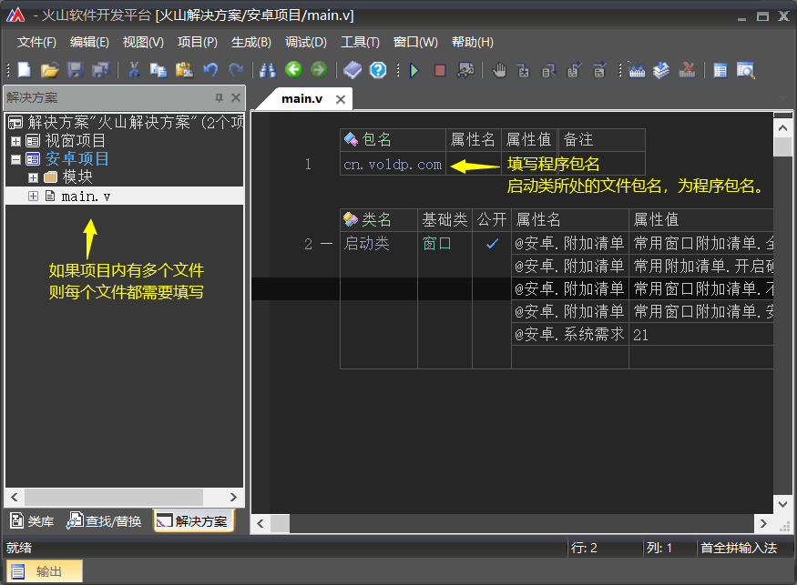
(2) 建立密钥文件
在安卓系统中，安卓程序必须要拥有密钥文件才可以运行。
1. 选择“工具 -> 安卓密钥文件建立器”。
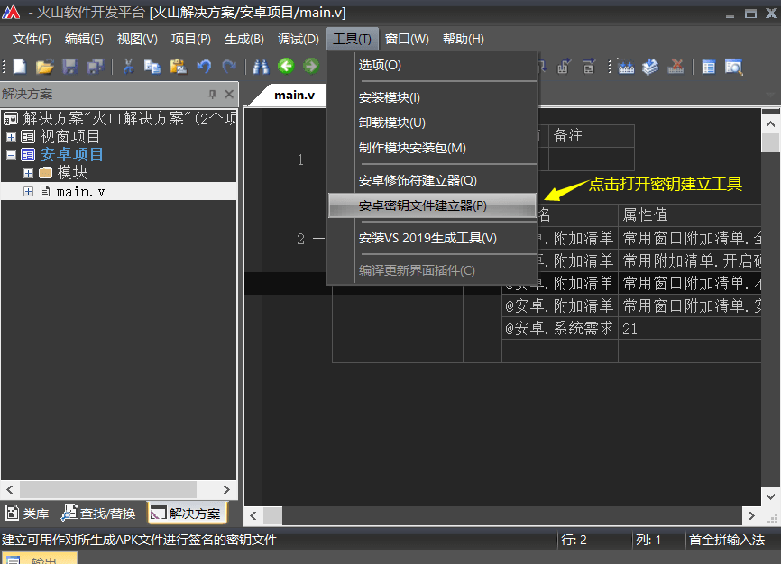
2. 建立器中只有两个必填项，密钥名称和文件保存位置。
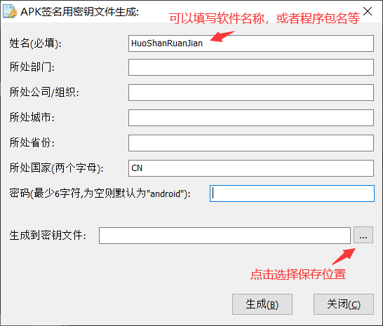
3. 打开的密钥文件保存窗口，默认会选择当前项目路径，直接输入文件名点击保存即可。
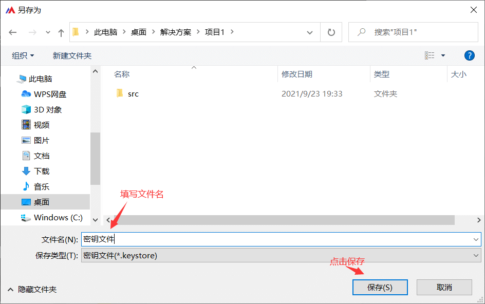
4. 点击生成。
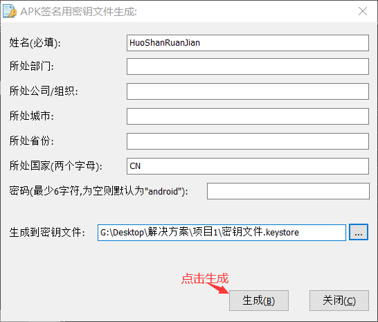
5. 最后会提示生成成功，如果失败可以尝试重新生成或者重启电脑后尝试。
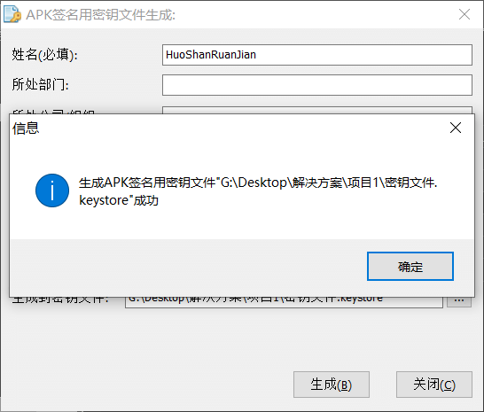
(3) 设置软件信息
使用快捷键“Alt + F7”，打开项目设置窗口。并依次设置程序标题、程序版本号、程序版本名称、程序图标、目标安卓平台SDK的API级别以及生成的密钥文件，填写完毕后，点击“确定”即可。
注意：软件应用市场升级软件通常以“程序版本号”为准，在升级软件时需修改“程序版本号”。
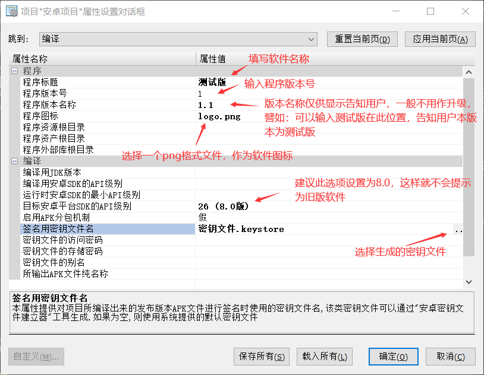
(4) 编译发布版
通过菜单“生成 -> 生成活动项目”或使用快捷键F7，都可以编译当前活动项目为发布版。
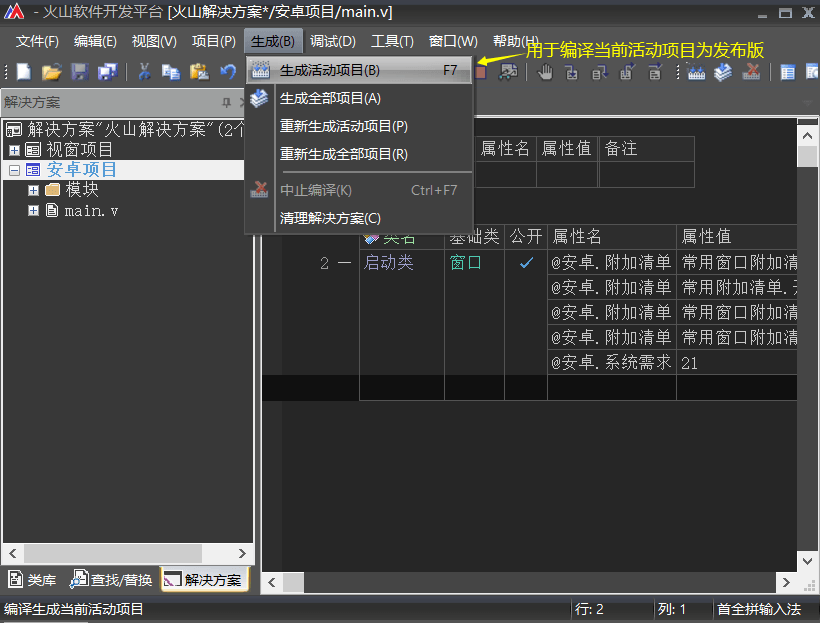
如果发生报错提示XXX不为有效的英文名称。
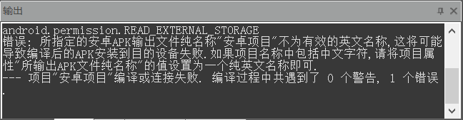
打开项目属性，设置“所输出APK文件纯名称”随便提供一个英文字母名称即可。
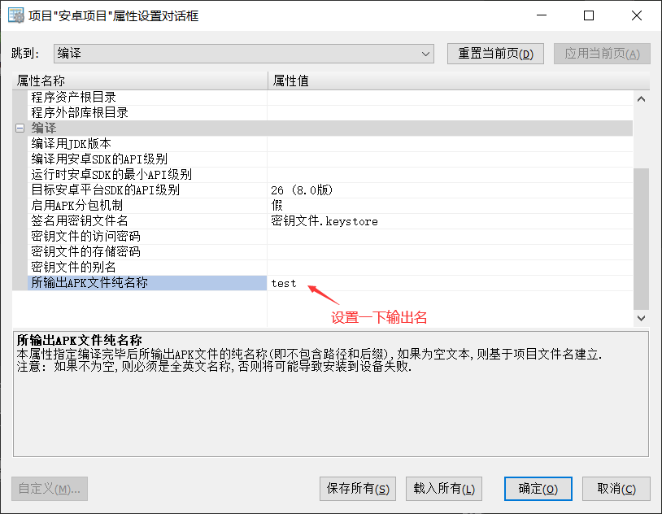
最后编译成功后，可以看到发布版的APK文件路径。
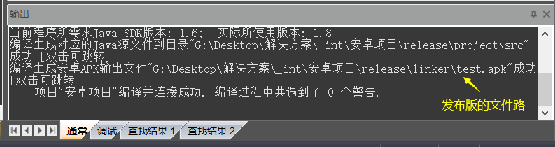
编译完成后生成的temp文件夹可以删除。
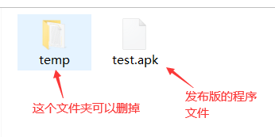
2、火山视窗
视窗项目编译发布版流程和安卓大致一样，都需要填写包名和软件信息。
(1) 填写程序包名
视窗程序中的包名可随意填写，只要保证至少有一个小数点即可。
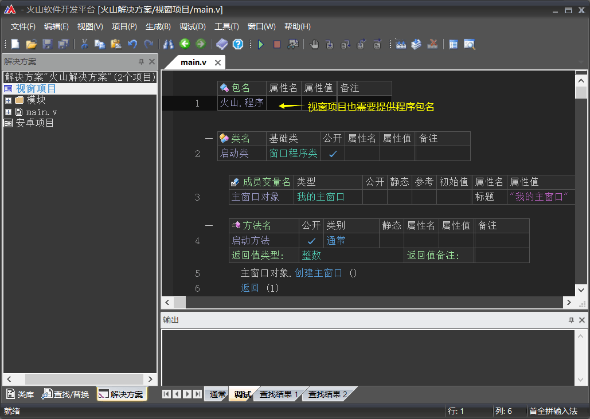
(2) 填写程序信息
使用快捷键“Alt + F7”，打开项目属性设置程序相关信息，完成后点击确定即可。
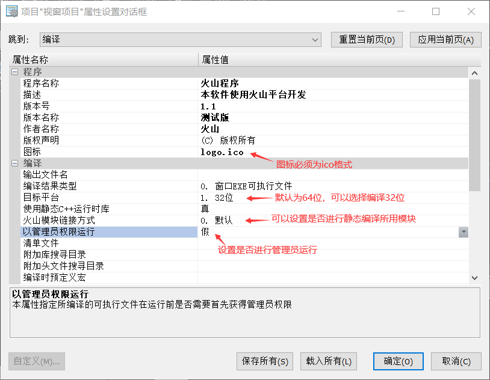
(3) 编译发布版
使用快捷键“F7”可以编译当前活动项目为发布版，编译完成后可以看到程序输出路径。
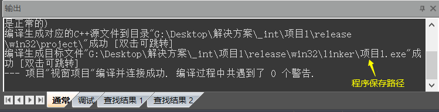
编译完成后生成的out文件夹可以删除，不会影响软件运行。
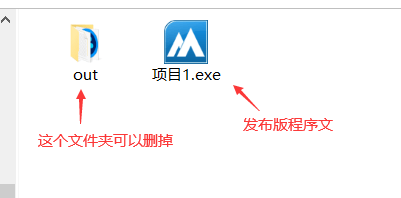
如果软件使用了一些模块，则编译出来的程序可能会附带一些DLL动态链接库文件，程序给用户使用时需要将dll一起打包给用户。
如下图为，编译视窗例程库中的Curl网络传输例程：
编译发布版也可通过右键选择。
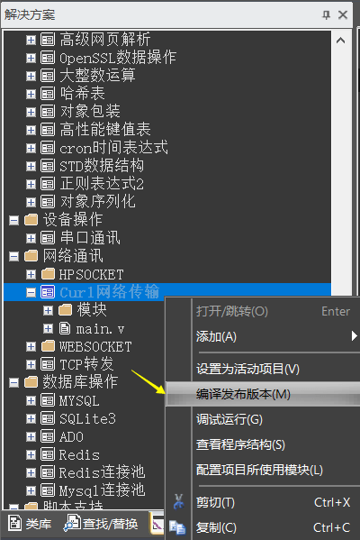
发布此程序给用户使用时需要将这些dll文件一起打包发给用户。
注：如果不想依赖dll文件，可通过项目属性设置“火山模块链接方式”为静态编译，可解决部分模块附带dll的问题。
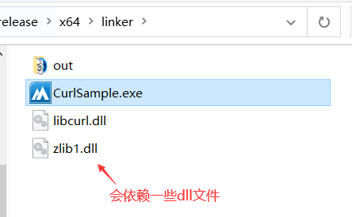